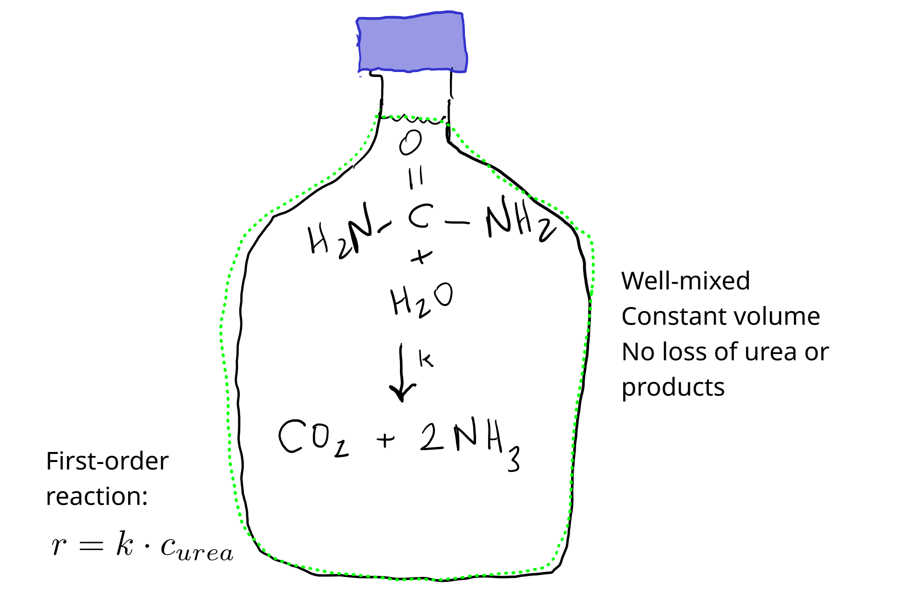
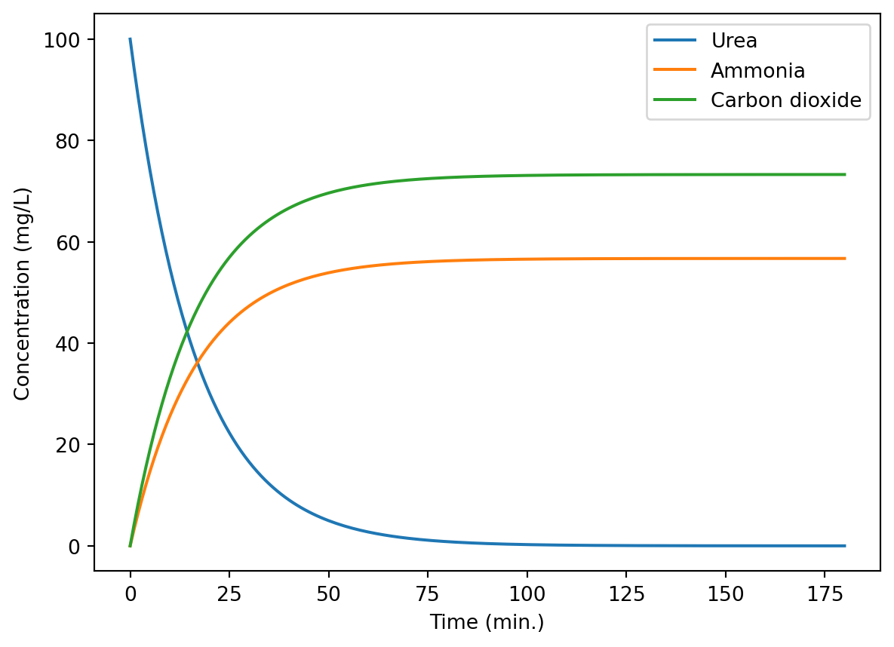

# Python packages
import numpy as np
import matplotlib.pyplot as plt
from importlib import reload
# Our module, loaded from the file ice_mods.py
import urea_mods as um- Formulate (pencil and paper or digital equivalent) and implement (in Python) a simple urea hydrolysis model. You can assume the reaction is first-order. Assume all products accumulate in a fixed solution volume (or solvent, water, mass). Plot predicted urea, ammonia, and carbon dioxide concentration over time.
Solution
1. Conceptual model
Let’s get the reaction written down first. This is copied from the book.
\[ \ce{CO(NH2)2 + H2O -> 2NH3 + CO2} \]
Now, one state variable is of course urea. But the problem description implies we need to track products as well. So \(\ce{NH3}\) and \(\ce{CO2}\) must be included as state variables as well.
In this model let’s assume we have a fixed volume of solution with urea. The urea is hydrolyzed following first-order kinetics, and the products accumulate.

2. Balance/conservation equations
For urea:
rate of urea accumulation = - rate of consumption in reaction
Ammonia:
rate of \(\ce{NH3}\) accumulation = rate of production in reaction
Carbon dioxide:
rate of \(\ce{CO2}\) accumulation = rate of production in reaction
These could all be interpreted as in total quantity or concentration units. Let’s use mg/L, because it is a common unit, and will demonstrate some challenges with reaction model units.
3. Constitutive equation
Reaction is first-order, so the rate \(r\) depends on a rate constant \(k\) and the urea concentration.
\[ r = k \cdot c_{urea} \]
4. Linking equations
We link reactant/product consumption/production rates to the overall reaction rates through the stoichiometric coefficients.
\[ \ce{CO(NH2)2 + H2O -> 2NH3 + CO2} \]
So, for mole-based units, we would have:
\[ r_{urea} = - r \]
\[ r_{\ce{NH3}} = 2 \cdot r \]
\[ r_{\ce{CO2}} = r \]
But here we are going to use mg/L, so we need to include molar mass, which we’ll call \(M\). We’ll keep \(r\) in mol/L-s.
\[ r_{urea} = - M_{urea} \cdot r \]
\[ r_{\ce{NH3}} = M_{\ce{NH3}} \cdot 2 \cdot r \]
\[ r_{\ce{CO2}} = M_{\ce{CO2}} \cdot r \]
5. Initial or boundary conditions
We will have to specify initial concentrations.
6. Governing equation
Here we need multiple governing equations. From 2, 3, and 4 above:
\[ \frac{d~urea}{dt} = - M_{urea} \cdot k \cdot \frac{c_{urea}}{M_{urea}} \]
But the molar mass drops out; after all this is a first-order reaction, so units don’t matter as long as they match on the LHS and RHS.
\[ \frac{d ~ urea}{dt} = - k \cdot c_{urea} \]
But for the others, they do.
\[ \frac{d \ce{NH3}}{dt} = \frac{ M_{\ce{NH3}} } {M_{urea}} \cdot 2 \cdot k \cdot c_{urea} \]
\[ \frac{d \ce{CO2}}{dt} = \frac{ M_{\ce{CO2}} } {M_{urea}} \cdot k \cdot c_{urea} \]
7. Solution
For inputs, we only need the first-order rate constant \(k\) and the initial concentrations.
We could easily solve this system analytically.
But we’ll start with a numerical approach.
Numerical
urea_mods.py
"""
File name: urea_mods.py
Author: Sasha D. Hafner
Course: Modelling 2026
Description:
This module defines a numeric and an analytical model
for urea hydrolysis.
Usage:
See urea.qmd
"""
# Load packages
import numpy as np
from scipy.integrate import solve_ivp
# Numerical model function
def urea_num(
c0,
k,
t_range,
t_step
):
"""
Dynamic numerical model for urea hydrolysis.
Parameters
----------
c0 : list or tuple of floats
Initial concentrations of urea, NH3, and CO2, in that order (mg/L)
k : float
First-order rate constant (1/s)
t_range : list or tuple of two floats
Minimum and maximum time in output (s)
t_step : float
Time step in output (s)
Returns
-------
dictionary
With elements 't' for time (s), c_urea, c_NH3,
and c_CO2 for solute concentrations (mg/L)
"""
# Set molar masses (g/mol or mg/mmol)
mm = np.array([60.056, 17.031, 44.010])
# Stoichiometric coefficients
ss = np.array([-1, 2, 1])
# Define rates function
def rates(t, conc):
# Derivatives depend only on urea concentration
# Let's get milimolar concentration here (mmol/L)
cm = conc[0] / mm[0]
# Reaction rate in mmol/L-s
rr = k * cm
# Now derivatives
dcdt = ss * mm * rr
return dcdt
res = solve_ivp(
rates,
t_span = t_range,
y0 = c0,
t_eval = np.arange(t_range[0], t_range[1] + t_step, t_step)
)
# Return results in dictionary
out = {
't': res.t,
'c_urea': res.y[0, :],
'c_NH3': res.y[1, :],
'c_CO2': res.y[2, :]
}
return out
# Analytical model function
def urea_ana(
c0,
k,
t_range,
t_step
):
"""
Analytical numerical model for urea hydrolysis.
Parameters
----------
c0 : list or tuple of floats
Initial concentrations of urea, NH3, and CO2, in that order (mg/L)
k : float
First-order rate constant (1/s)
t_range : list or tuple of two floats
Minimum and maximum time in output (s)
t_step : float
Time step in output (s)
Returns
-------
dictionary
With elements 't' for time (s), c_urea, c_NH3,
and c_CO2 for solute concentrations (mg/L)
"""
# Set molar masses (g/mol or mg/mmol)
mm = np.array([60.056, 17.031, 44.010])
# Stoichiometric coefficients
ss = np.array([-1, 2, 1])
t_eval = np.arange(t_range[0], t_range[1] + t_step, t_step)
cm0 = c0[0] / mm[0]
c_urea = cm0 * np.exp(-k * t_eval)
c_NH3 = ss[1] * cm0 * (1 - np.exp(-k * t_eval))
c_CO2 = ss[2] * cm0 * (1 - np.exp(-k * t_eval))
# Return results in dictionary
out = {
't': t_eval,
'c_urea': c_urea * mm[0],
'c_NH3': c_NH3 * mm[1],
'c_CO2': c_CO2 * mm[2]
}
return out
Here are some predictions.
Reload as needed during development. (If your Python model works the first time, you are better than me.)
reload(um)<module 'urea_mods' from '/home/sasha/repos/course-modelling-2026/classes/08-17-sept-reactions/solutions/urea_mods.py'>res = um.urea_num(
c0=[100, 0, 0],
k=1e-3,
t_range = (0, 3 * 3600),
t_step = 60
)plt.plot(res['t'] / 60, res['c_urea'], label = 'Urea')
plt.plot(res['t'] / 60, res['c_NH3'], label = 'Ammonia')
plt.plot(res['t'] / 60, res['c_CO2'], label = 'Carbon dioxide')
plt.xlabel('Time (min.)')
plt.ylabel('Concentration (mg/L)')
plt.legend()Let’s do a little external verification. Are the final concentrations reasonable? 100 mg urea is 0.00167 mol. So we’d expect \(2 \cdot 0.00167 = 0.00333\) mol \(\ce{NH3}\) and 0.00167 mol \(\ce{CO2}\). That’s 57 mg \(\ce{NH3}\) and 73 mg \(\ce{CO2}\). Check:
res['c_NH3'][-5:]array([56.71557953, 56.71566598, 56.71574738, 56.71582405, 56.71589626])res['c_CO2'][-5:]array([73.27968572, 73.27979742, 73.2799026 , 73.28000166, 73.28009496])Looks good!
Analyical solution
Start with the urea GE:
\[ \frac{d ~ urea}{dt} = - k \cdot c_{urea} \]
From Chapter 2, you should know that this is a solution:
\[ c_{urea} = c_{urea, 0} \cdot e^{-k \cdot t} \]
For the others, here is a mass balance-based approach.
\[ c_{\ce{NH3}} = \frac{M_{\ce{NH3}}} {M_{urea}} \cdot 2 \cdot c_{urea, 0} \cdot (1 - e^{-k \cdot t}) \]
\[ c_{\ce{CO2}} = \frac{M_{\ce{NH3}}} {M_{urea}} \cdot c_{urea, 0} \cdot (1 - e^{-k \cdot t}) \]
Here are some results.
# Python packages
import numpy as np
import matplotlib.pyplot as plt
from importlib import reload
# Our module, loaded from the file ice_mods.py
import urea_mods as umReload as needed during development. (If your Python model works the first time, you are better than me.)
reload(um)<module 'urea_mods' from '/home/sasha/repos/course-modelling-2026/classes/08-17-sept-reactions/solutions/urea_mods.py'>res = um.urea_ana(
c0=[100, 0, 0],
k=1e-3,
t_range = (0, 3 * 3600),
t_step = 60
)plt.plot(res['t'] / 60, res['c_urea'], label = 'Urea')
plt.plot(res['t'] / 60, res['c_NH3'], label = 'Ammonia')
plt.plot(res['t'] / 60, res['c_CO2'], label = 'Carbon dioxide')
plt.xlabel('Time (min.)')
plt.ylabel('Concentration (mg/L)')
plt.legend()